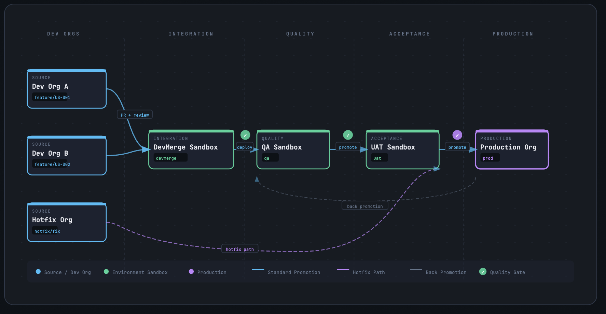
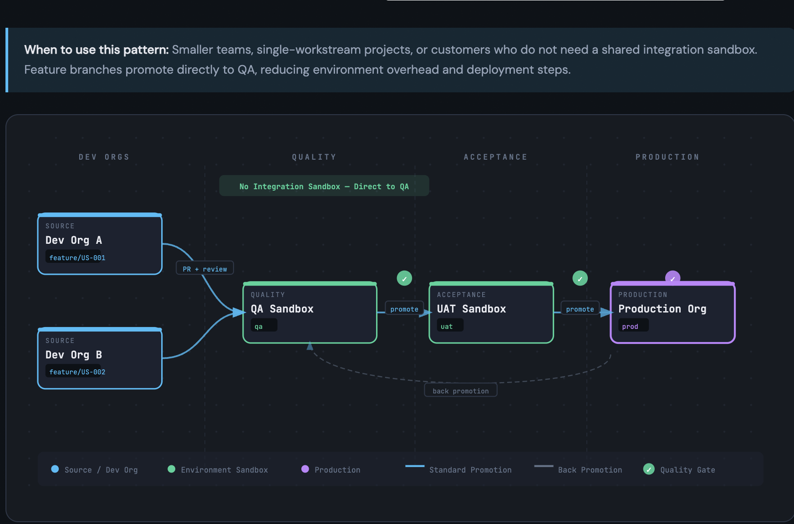

As we transition away from a centralized integration sandbox (DevMerge),
we must introduce stronger governance at the pull request level to protect QA from instability.
Before: With DevMerge (Shock Absorber)

DevMerge sandbox acted as a buffer, catching cross-team conflicts before QA.
After: Direct to QA (No Buffer)

Feature branches now promote directly to QA, increasing risk of integration issues.
⚠️ Problem
Without DevMerge, QA becomes the first point of integration — exposing it to:
Cross-team metadata conflicts
Deployment failures
Unstable builds
✅ Solution: Shift-Left Quality Control
QA protection must now be enforced at the Pull Request level by Team Leads.